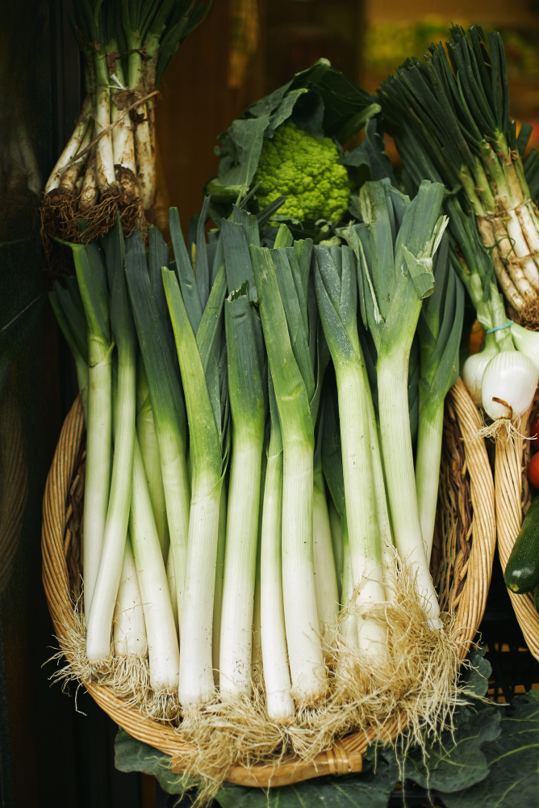

El punto mas rico de una salsa de puerro con fideos.
Esta salsa de puerro es de las mejores, con un punto umami exquisito y muy cremosa
Cortar la parte blanca del puerro en pequeñas rodajas del tamaño de una moneda
En una sarten, agregar un chorro de aceite de aceite de oliva o girasol y dejar calentar 20 segundos
agregar el puerro al aceite y dejar cocinar (revolviendo) durante 1 minuto (no debe llegar a dorarse)
Agregar la crema de leche, sal, pimienta y nuez moscada. Revolver hasta que la crema empiece a burbujear
Cuando la crema esté lo suficientemente caliente (casi hirviendo), agregar las fetas de queso y revolver hasta que se disuelva.
Ya disuelto, dejar cocinando 2 minutos revolviendo para que no se pegue
Listo! ya podes servir la salsa en tus fideos!